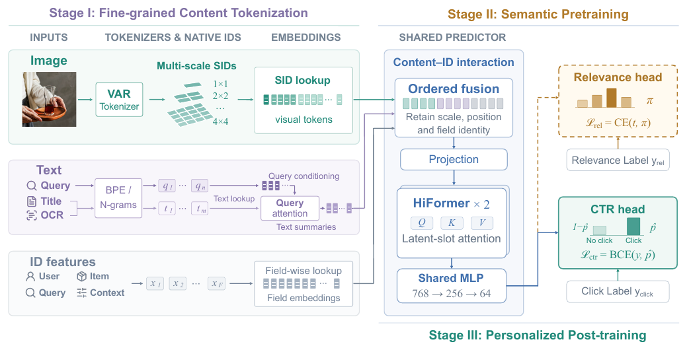
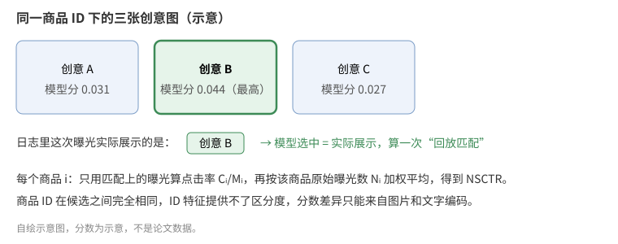

淘宝搜索的精排 CTR 模型主要靠用户、搜索词、商品这些 ID 特征记忆历史点击。同一件商品换一张主图、改一行标题，商品 ID 不变，模型给出的分数也几乎不变；新上架、点击很少的商品，ID 本身就没学到多少东西。阿里这篇 FineSID 把商品图片和文字拆成细粒度的离散编码，和普通 ID 特征一起查表输入同一个排序网络：图片用 VAR 图像分词器编成 1×1 到 4×4 四个尺度、共 30 个带位置的编码，标题、OCR 文字按字段各自分词。训练分两步，先用大模型标注的“搜索词—商品”相关性训练整个网络，再换上点击预测头，用点击日志微调全部参数。离线 AUC 比 HiFormer 基线高 0.25 个百分点，冷门商品上高 0.38 个百分点；淘宝主搜七天 A/B 中点击 +0.21%，GMV +0.85%。
整体结构是三段：第一段离线把内容变成离散编码，第二段用相关性标签预训练共享网络，第三段用点击标签做个性化微调。第二、三段用的是同一个网络，只换输出头。
1. 问题：内容信息怎么进 ID 模型
工业 CTR 模型的主体是 ID 特征的 embedding 加特征交叉网络。多模态内容要接进来，常见有三种做法。第一种是端到端联合训练图像编码器，成本太高。第二种是把预训练模型产出的连续向量当特征拼进去，比如论文对比的 LEARN 式做法直接拼 Qwen3.5 的内容向量；连续向量和稀疏 ID 的分布差异大，往往只能在后面几层融合。第三种是语义 ID（SID）：把整件商品的内容向量量化成几个离散码，再像 ID 一样查表，代表是 RQ-VAE SID。
作者认为第三种方向是对的，但粒度太粗。RQ-VAE 把一整张图压成几个码，图里“左上角有没有促销角标”“模特穿的是什么颜色”这类空间细节都丢了，同一商品的两张主图很可能被编成同一组码。FineSID 想保留这些细节，同时不让线上多跑一个图像模型。

2. 方法
2.1 内容变成离散编码
图片用的是 VAR 的预训练分词器。VAR 是一个按尺度逐级生成图像的模型，它的分词器以重建图像为目标训练，会把一张图编成从粗到细多个尺度的编码图。FineSID 取其中 1×1、2×2、3×3、4×4 四个尺度，每个格子一个编码，一张图 1+4+9+16=30 个编码。粗尺度对应整体风格，细尺度对应局部区域。
这些编码离线算好存下来，线上只多做 30 次查表，不跑图像模型。排序网络里给它们配的 embedding 表是随机初始化、跟着任务一起训的，和 VAR 自己的重建码本无关。展平时保持“第几尺度、第几个格子”的固定顺序，所以同一个位置的编码总是进入同一个输入槽。
文字这边，搜索词、标题、OCR 文字各用自己的 BPE 和 n-gram 词表分词，每个字段保留成独立的 token 序列，不先压成一个摘要向量。
2.2 共享预测网络
三类输入在网络里这样汇合。文字字段先做一次交叉注意力：用搜索词的 embedding 当 query，标题、OCR 各自的 token embedding 当 key 和 value，得到“按当前搜索词加权过的”文字表示。然后按固定顺序拼接：原有 ID 特征的 embedding、30 个视觉编码的 embedding、各字段的文字表示，作者称这一步为有序拼接。
拼好的长向量先投影到 768 维，再进两层 HiFormer。HiFormer 是 Google 提出的特征交叉结构，这里用的是它的隐槽注意力：把输入映射到少量固定的槽位上做注意力，避免对几千个 token 做完整自注意力的平方复杂度。最后经过 768→256→64 的 MLP 得到 64 维共享表示 h，交给输出头。
2.3 先学相关性，再学点击
第二段用相关性做预训练。每条曝光由一个在百万级人工标注上微调过的 Qwen3.5 模型打一个四档相关性的软分布，网络用软标签交叉熵去拟合：
是教师给第 档的概率， 是网络的预测分布， 是共享网络参数， 是相关性头。直觉是让 SID embedding 和交叉层先学会“这张图、这个标题和这个搜索词配不配”，这件事只靠点击学很慢，因为点击混着价格、品牌偏好等因素。
第三段扔掉相关性头，接一个随机初始化的点击头，用标准的二分类交叉熵在点击日志上微调全部参数，包括 SID embedding、ID embedding、交叉层和归一化统计量。作者强调这是全参数迁移，区别于只迁移 embedding、丢掉上层网络的做法。
3. 实验
数据是淘宝搜索的真实曝光日志：8 月 25–31 日七天训练，约 512 亿条曝光、2.51 亿用户、4.18 亿商品；9 月 1 日一天评估，4.53 亿条曝光。指标是 AUC、按搜索词分组的 GAUC，以及评估当天浏览量少于 1,000 的冷门商品子集上的同样两个指标。淘宝结果都报告相对 HiFormer 基线的绝对差，单位是百分点。
主结果：和其他内容接入方式比。这组实验要证明细粒度编码比整图向量、粗粒度 SID 更有效。对照组都在同一个 HiFormer 基线上加内容：Visual ID 把视觉向量量化成离散 ID，COINS 用 SID 对齐内容和协同信号做冷启动，PRECTR 和 Joint relevance + CTR 是两种把相关性监督接进 CTR 的方法。
| 方法 | AUC | GAUC | 冷门 AUC | 冷门 GAUC | NSCTR |
|---|---|---|---|---|---|
| LEARN 式内容向量 | +0.05 | +0.04 | +0.14 | +0.09 | +0.18% |
| Visual ID | +0.14 | +0.14 | +0.16 | +0.21 | +0.24% |
| RQ-VAE SID | +0.12 | +0.15 | +0.20 | +0.25 | +0.22% |
| COINS | +0.16 | +0.13 | +0.18 | +0.28 | +0.27% |
| PRECTR | +0.10 | +0.15 | +0.11 | +0.16 | – |
| Joint relevance + CTR | +0.04 | +0.03 | −0.04 | −0.07 | – |
| FineSID | +0.25 | +0.26 | +0.38 | +0.34 | +0.75% |
FineSID 在所有列上最高，冷门子集上的提升比全量更大，符合“ID 信号少时内容编码补位”的预期。直接拼连续向量的 LEARN 式做法 AUC 只有 +0.05；Joint relevance + CTR 在冷门子集上还低于基线。
同商品创意区分。这组实验要排除“模型只是记住了商品 ID”的解释。做法是固定商品 ID，只比较同一商品的不同创意（主图、标题），指标是 NSCTR：对每条曝光，模型在该商品的候选创意里挑分最高的一张；如果正好是日志里实际展示的那张，就算一次匹配，用匹配曝光的点击率按商品原始曝光数加权平均。候选之间 ID 完全相同，分差只能来自内容。FineSID 的 NSCTR 相对提升 0.75%，COINS 是 0.27%。

消融：每一段贡献多少。
| 配置 | AUC | 冷门 AUC | NSCTR |
|---|---|---|---|
| 完整 FineSID | +0.25 | +0.38 | +0.75% |
| 去掉第二段相关性预训练 | +0.20 | +0.31 | +0.51% |
| 视觉多尺度槽位和文字交叉注意力改成平均池化 | +0.12 | +0.22 | +0.44% |
| 去掉细粒度 SID，只剩 ID 特征 | +0.03 | −0.03 | +0.02% |
去掉 SID 后提升几乎归零，冷门 AUC 还略低于基线，说明主要收益来自内容编码本身。相关性预训练再往上加 0.05 个百分点 AUC，对 NSCTR 的影响更大，从 0.51% 到 0.75%。平均池化把 AUC 提升砍掉一半多，说明保留位置和字段身份是有用的。
公开数据 MMCTR。MMCTR 没有相关性标签，只能测去掉第二段的版本。HiFormer 基线 AUC 0.9767，FineSID 达到 0.9844（+0.77 个百分点），高于 COINS 的 0.9825 和 LEARN 式的 0.9823。
线上 A/B。淘宝主搜七天，对照为线上生产模型：点击 +0.21%，GMV +0.85%，两项都通过显著性检验。作者称线上精排阶段延迟没有显著增加，原因是 30 个视觉编码离线提取，线上只多了查表和第一层投影变宽。
4. 局限
作者自己列了三条。VAR 分词器按图像重建训练，在第二段被冻结，编码没有针对搜索语义优化。相关性预训练只验证了迁移到 CTR，召回、转化率预估还没试。30 个编码让拼接向量变宽，放到要处理百万级候选的召回阶段还需要优化。
补充一点：MMCTR 上只测了不含相关性预训练的版本，所以完整三段流程只有淘宝一个数据源的证据；线上 GMV 提升 0.85% 但点击只 +0.21%，论文没有拆解 GMV 增量来自哪类商品。
5. 对做精排的团队有什么用
如果你的精排模型已经有一路内容向量特征但收益很小，可以试 FineSID 的思路：把图片换成多尺度、带位置的离散编码，和 ID 特征走同一套 embedding 查表，线上成本主要是存储和查表。
如果业务里有现成的相关性标注或相关性模型，可以先用它预训练整个排序网络，再在点击数据上全参数微调。消融里这一步对同商品创意的区分（NSCTR）帮助最大，适合有多图、多标题创意优选需求的场景。